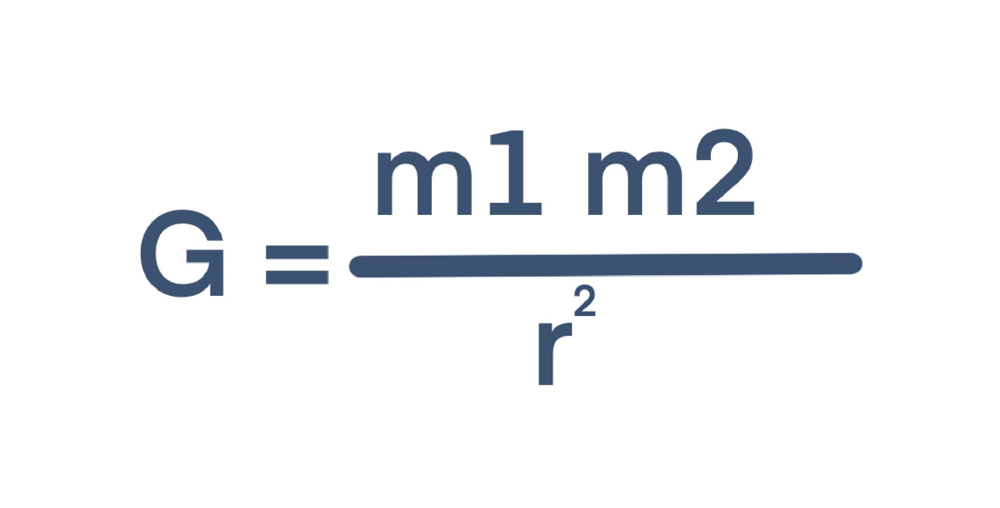
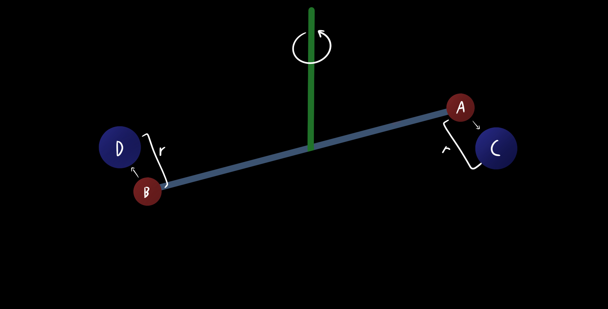
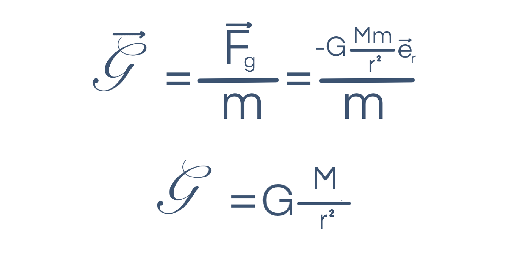
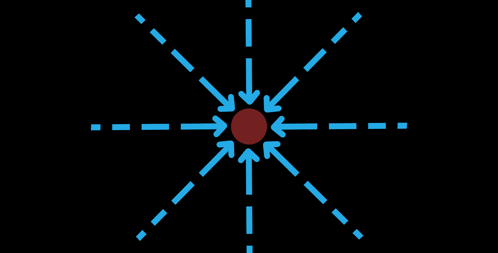

Anterior: Leis de Kepler
Olá outra vez.
No último artigo falamos sobre as Leis de Kepler, mas também percebemos que estas não explicam o porquê de os corpos celestes terem o seu movimento. Este facto é explicado por Newton e as suas Leis
Contextualização Histórica
A lenda diz que certo dia, Newton estava deitado por baixo de uma árvore, quando a queda de uma maçã lhe originou uma epifania.
Newton vinha a estudar o movimento planetário, assim como balística (essencialmente o movimento de projéteis), mas só nesse momento percebeu que a força responsável por esses dois efeitos era a mesma, a Gravidade.
Lei da Gravitação Universal
Através dos seus cálculos, e da aplicação das leis determinadas por Kepler, Newton consegui propor a sua Lei da Gravitação Universal, podendo assim a intensidade da força exercida entre dois corpos de massas m1 e m2 ser traduzida pela seguinte fórmula:

F: Intensidade da força gravítica
m1: Massa do corpo 1
m2: Massa do corpo 2
r²: Quadrado da distância entre os centros de massa dos dois corpos
G: constante de gravitação universal 6.67x10⁻¹¹ N m² kg⁻²
Apesar de G ser bastante importante para esta lei, o valor da mesma apenas foi determinado cerca de 100 anos mais tarde através da experiência de Cavendish:

Esta experiência consiste na colocação de duas massas pequenas (A e B) nas extremidades de uma barra suspensa por um fio. São também colocadas duas massas maiores e amovíveis (C e D) afastadas das mais pequenas por uma distância r. As massas A e B serão atraídas para C e D, pelo que o fio será torcido e através dessa mesma torção será possível determinar G.
Lei da Gravitação Universal: Entre dois corpos, A e B de massas m1 e m2 respetivamente, existe uma força diretamente proporcional ao produto entre as suas massas e inversamente proporcional ao quadrado da distância entre os seus centros de massa.
Campo Gravítico
Assim como acontece com cargas elétricas, também todas as massas m num certo campo gravítico ficam sujeitas a uma determinada interação.
O Campo Gravítico é utilizaqdo como uma forma de descrever a açãode uma massa M independentemente da massa m da segunda partícula, pelo que:

Este Campo é por isso radial, centrípeto e pode ser representado por Linhas de campo que nunca se cruzam:

Caso estejam interessados em saber a intensidade do vosso campo gravítico podem tentar clicar aqui.
Conclusão
Newton foi um verdadeiro génio. Descobriu o cálculo, várias leis físicas, publicou uma das obras mais importantes da história da ciência, o Principia e é através das suas descobertas que muita da ciência moderna é possível.
No próximo artigo falaremos um pouco mais sobre o Campo Gravítico e consequências do mesmo.